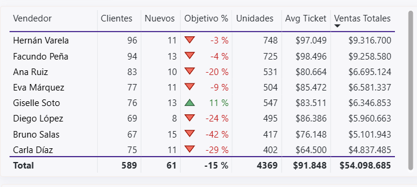
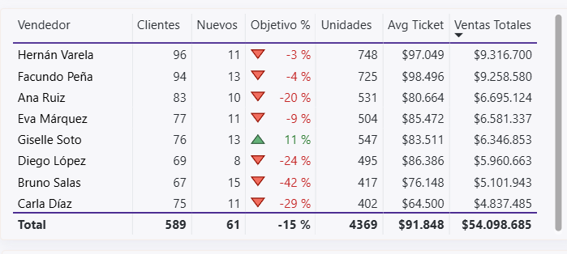

Para líderes comerciales B2B
Convierte los datos de ventas en ingresos
Deja de adivinar. Empieza a saber. Dashboards automatizados diseñados para equipos comerciales de alto rendimiento.
- check_circle Dejar de adivinar: ordenar y limpiar datos clave
- check_circle Empezar a saber: ver lo importante en un solo dashboard
- check_circle Convertir insights en ingresos: ejecutar con foco y consistencia
 


Vista General
task_alt
Dejar de adivinar
Empezar a saber